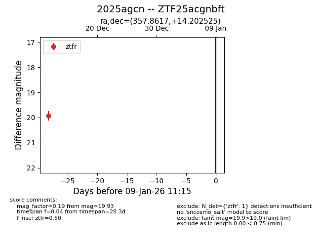
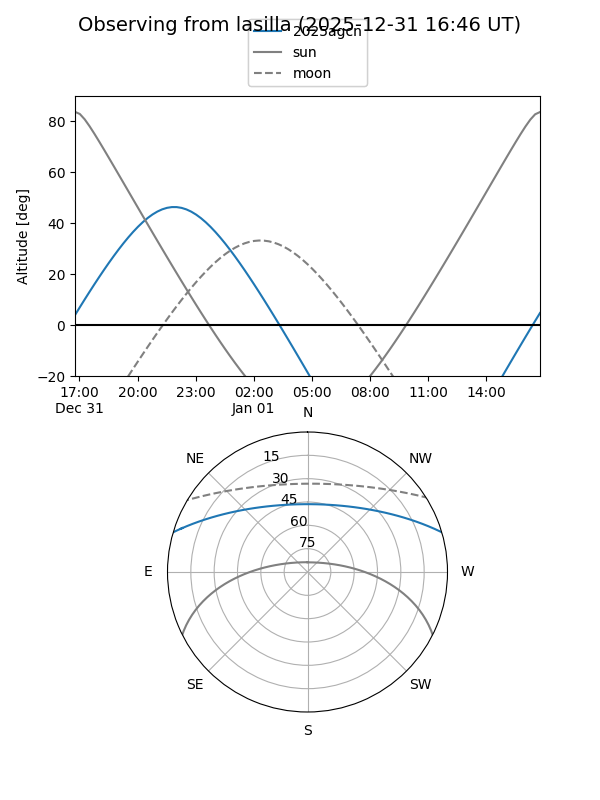
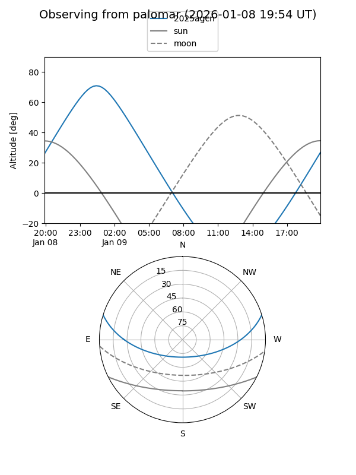

2025agcn
Target 2025agcn at 2026-01-09 12:49
Aliases and brokers:
FINK: link
Lasair: link
ALeRCE: link
TNS: link
YSE: link
alt names
ZTF25acgnbft (ztf,fink_ztf)
2025agcn (tns,yse)
Coordinates:
equatorial (ra, dec) = 357.8617,+14.20252
equatorial (HMS+DMS) = 23:51:26.82,+14:12:09.09
galactic (l, b) = (101.6889,-46.18009)
Flags:
Photometry:
last ztfr=19.93
1 ztfr detections
Lightcurve

Visibility


Additional plots